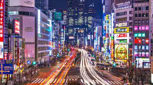

Blog de ciudades
ecnología Avanzada: Tokio es un centro de innovación y tecnología, con distritos como Akihabara y Shibuya que muestran lo último en electrónica y entretenimiento.
Cultura Tradicional: A pesar de su modernidad, Tokio conserva su rica herencia cultural, con templos antiguos como el Senso-ji en Asakusa que ofrecen un vistazo al pasado de Japón.
Gastronomía Exquisita: Desde sushi fresco en Tsukiji hasta ramen reconfortante en pequeños restaurantes locales, Tokio es un paraíso culinario que satisface todos los gustos.
Espacios Naturales Tranquilos: A pesar de ser una metrópolis bulliciosa, Tokio cuenta con hermosos jardines y parques como el Jardín Nacional Shinjuku Gyoen y el Parque Yoyogi, que ofrecen un respiro tranquilo de la vida urbana.
